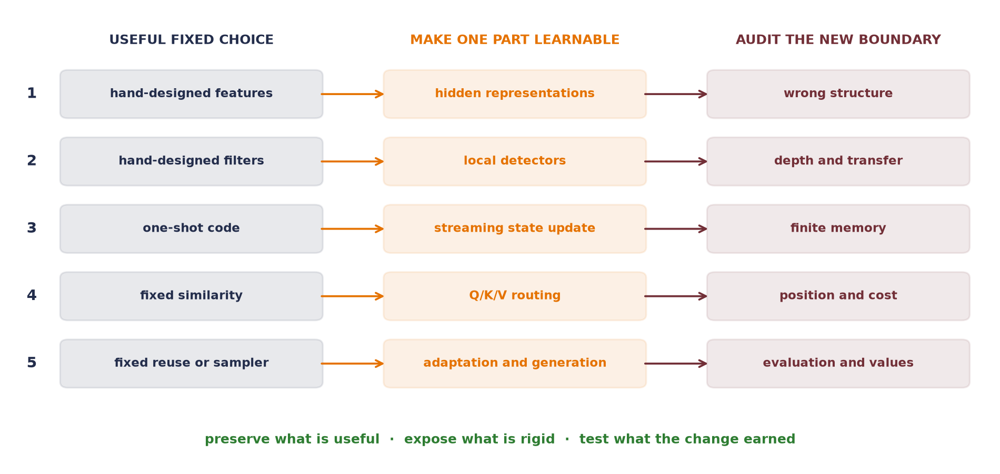

We began with a line. Its features were fixed, its prediction rule was transparent, and its limitations were easy to draw. Then we asked the question that has followed us through every part of this book:
What if we made this learnable?
At first, that question sounded like permission to add flexibility. By now it should sound more demanding. Every successful step in the book paired something learnable with something deliberately fixed — an objective, a structure, a data contract, an evaluation, or a compute budget. Flexibility without those constraints can fit almost anything. A result without an audit can appear to prove almost anything.
The point of the journey was therefore not to collect architectures — it was to learn a way of seeing a problem: find the rigid part, understand why it fails, decide what the data should be allowed to change, and design evidence that can tell whether the change helped.
The ladder we climbed
Figure code: summarize the book’s learnability ladder
import matplotlib.pyplot as pltfrom matplotlib.patches import FancyArrowPatch, FancyBboxPatchnavy, orange, green, wine ="#232D4B", "#E57200", "#2E7D32", "#722F37"rows = [ ("hand-designed features", "hidden representations", "wrong structure"), ("hand-designed filters", "local detectors", "depth and transfer"), ("one-shot code", "streaming state update", "finite memory"), ("fixed similarity", "Q/K/V routing", "position and cost"), ("fixed reuse or sampler", "adaptation and generation", "evaluation and values"),]fig, ax = plt.subplots(figsize=(10, 4.8))ax.set_xlim(0, 10)ax.set_ylim(0, 6.2)ax.axis("off")for x, label, color in [ (1.85, "USEFUL FIXED CHOICE", navy), (5.15, "MAKE ONE PART LEARNABLE", orange), (8.45, "AUDIT THE NEW BOUNDARY", wine),]: ax.text(x, 5.78, label, ha="center", va="center", color=color, fontsize=9.2, weight="bold")for index, (fixed, learned, audit) inenumerate(rows, start=1): y =5.05-0.92* (index -1) ax.text(0.22, y, str(index), ha="center", va="center", color=navy, fontsize=10.5, weight="bold")for x, text, color in [ (0.55, fixed, navy), (3.85, learned, orange), (7.15, audit, wine) ]: ax.add_patch(FancyBboxPatch( (x, y -0.29), 2.60, 0.58, boxstyle="round,pad=0.04,rounding_size=0.08", facecolor=color, edgecolor=color, alpha=0.10, lw=1.2, )) ax.text(x +1.30, y, text, ha="center", va="center", color=color, fontsize=8.5, weight="bold")for start, end, color in [(3.15, 3.85, orange), (6.45, 7.15, wine)]: ax.add_patch(FancyArrowPatch( (start, y), (end, y), arrowstyle="->", mutation_scale=12, lw=1.4, color=color, ))ax.text(5.0, 0.28,"preserve what is useful · expose what is rigid · test what the change earned", ha="center", color=green, fontsize=9.4, weight="bold")plt.tight_layout()plt.show()

Figure 1: The book’s recurring move was never flexibility by itself. Each rung begins with a useful fixed choice, makes one part learnable, and then audits the new failure boundary. The rightmost column is what keeps the ladder moving.
The first rung was representation. Linear regression could only combine the features we handed it. A multilayer perceptron made intermediate features learnable, while backpropagation assigned blame to millions of knobs and stochastic gradient descent turned that blame into updates. That bought expressive power. Chapter 6’s shift cliff then taught the necessary counterlesson: the ability to represent a good solution does not make the learner likely to find the right one. Inductive bias tells the search what kinds of solutions deserve preference.
The second rung was spatial structure. A classical image filter already knew how to look locally and reuse one detector across positions, but a person chose its numbers. Convolution kept locality and sharing fixed while making the detector weights learnable. Deeper CNNs then made feature hierarchies learnable; residual paths protected the flow of information while depth increased; global pooling and transfer learning changed what had to be relearned for each task. The lesson was not simply that CNNs are good for images — it was that a useful constraint can reduce the search space and improve the learner at the same time.
The third rung was compression and memory. PCA supplied a closed-form linear recipe for learning a low-dimensional subspace. The autoencoder interlude rewrote that reconstruction as a trainable encoder and decoder, then let the maps bend around nonlinear structure. The same detour exposed a limit: one fixed-width code is a difficult place to store an arbitrarily long sequence. Recurrence made the code an evolving state, updated step by step. The LSTM added learned valves so information and gradients could travel farther. Encoder–decoder models made the handoff between two sequences explicit, and their fixed-state bottleneck prepared the next move.
The fourth rung was comparison. Kernel regression predicted by comparing a query with stored examples, but its notion of similarity was fixed. Attention made the query, key, and value maps learnable. Self-attention let every token build context from other tokens, while positional representations restored order that the content comparison alone could not see. The Transformer did not erase inductive bias — it redistributed it into tokenization, position, masking, normalization, architecture, data, and scale. Chapter 20 carried the same comparison rule across modalities: paired observations made image and text encoders comparable in one normalized space. The boundary remained sharp—a shared embedding is a comparison rule, not a generator.
The fifth rung was reuse. Pretraining changed the default from “learn every task from a random start” to “begin from a representation shaped by a broader objective and adapt it.” BERT made a bidirectional language representation learnable from masked context. Vision Transformers carried the same attention machinery into patches. PEFT and quantization asked which parts of a large trained system must change, and at what precision, to make adaptation affordable. Alignment asked what behavior the adaptation objective actually rewards. Generative models completed a different contract: not only score an observed object, but specify how a new one is sampled.
These are not five unrelated inventions — they are five passes through the same loop:
expose a limitation \(\rightarrow\) preserve the useful structure \(\rightarrow\) make the rigid part learnable \(\rightarrow\) test the new failure boundary.
The choices no architecture makes for you
A model does not learn what we meant. It learns what the training signal rewards on the data it sees, as far as the optimization procedure can reach. Three choices therefore sit outside every impressive architecture.
The objective chooses what counts as progress. Squared error, cross-entropy, reconstruction error, an ELBO, a preference loss, and a denoising objective reward different behavior. Each is a useful proxy under stated assumptions — not a direct measurement of every property we care about. Making the reward model or judge learnable moves the question one level outward: who trained the judge, on which comparisons, and what shortcuts can satisfy it?
The data chooses the world the learner can encounter. Sampling, labels, preprocessing, augmentation, missing groups, duplicated records, and historical choices all shape the learned function. Chapter 6 named augmentation as data-side inductive bias because its transformations declare which changes should preserve the answer. Pretraining at scale does not remove this dependence; it enlarges the data contract and makes its provenance harder to inspect.
The evaluation chooses what can count as evidence. Clean accuracy did not reveal the shift cliff. Reconstruction did not give an autoencoder a sampling distribution. A discriminator near one half did not certify GAN convergence. Preference accuracy did not settle downstream safety or usefulness. Every metric has a scope, so a serious evaluation names the held-out distribution, relevant slices, perturbations, baselines, uncertainty, and failure conditions before celebrating a number.
Objective, data, and evaluation are not paperwork around the model — they are part of the model’s meaning. When deployment changes any one of them, the original claim may no longer travel.
Learning about learning
There were two learners in this book. Inside one run, weights learned from gradients. Across runs, we learned which designs, recipes, and explanations survived evidence. The experimentation interlude made that outer loop explicit.
The habits are simple to state and difficult to practice. Debug before searching. Fix the question before choosing the comparison. Tune a contender enough that a broken recipe is not mistaken for a broken idea. Ablate the claim with a controlled change. Use paired seeds when pairing removes irrelevant variation, and show the individual runs when a mean would hide instability. Keep validation decisions away from the final test audit. Record the budget and the failures, not only the winning configuration.
This discipline changes how we read a plot. A curve is no longer decoration — it is an answer to a declared question under a declared regime. A negative result is no longer an embarrassment; it is a boundary, provided the experiment was capable of detecting the effect. A successful toy problem is no longer a miniature benchmark victory — it is a measuring instrument for one mechanism. “It worked” becomes the beginning of the explanation, not the end.
From fitting the past to evaluating futures
Chapters 12, 14, and 17 answered with evidence already observed: memory fits the past. Could a layer instead evaluate possible futures and return the first action of a plan? Wang, Yang, Vidal and colleagues call that proposal test-time control. The operational distinction is backward-looking fitting versus forward-looking evaluation. Their “System 1/System 2” language is a metaphor—a useful cartoon in some settings, not a psychological law or a demonstrated partition inside a model.
The following map extends the paper’s adaptation taxonomy to this book’s landmarks.
Figure: map adaptation target against learning signal
Figure 2: Adapted and extended from Table 3 in Wang, Yang, Vidal et al. (2026). The axes broaden the paper’s fast/slow weight and self-supervised/reward taxonomy. Asterisks mark analogies: prompting and ICL need not optimize fast weights; LoRA is an update parameterization; DPO uses preferences without requiring policy-gradient RL. This is an organizing map, not an equivalence claim.
The asterisks matter. Prompting changes transient computation without necessarily running an optimizer; test-time training performs an inner update. LoRA says which persistent weights may move, not which signal moves them. Chapter 18 trained a judge outside the policy and then changed persistent parameters. Test-time control makes a narrower lower-left bet: place a tractable cost inside the layer and plan against it before each token.
NoteDeeper dive: plan before predict
The smallest honest example is scalar finite-horizon linear–quadratic control:
For \(q_c,r_c>0\), minimize the terms \(r_cu_s^2+P(a x_s+b u_s)^2\) with respect to \(u_s\). Differentiation makes the best action linear in \(x_s\); substitution gives the scalar Riccati step
Initialize \(P=q_c\), update it \(T-1\) times, then form \(K_1\). Here \(P\) is the scalar coefficient of the quadratic value-to-go; a longer horizon performs more backward value updates before choosing the first action.
Code: verify that planning horizon changes the first action
a, b, q_cost, r_cost =0.9, 1.0, 1.0, 0.1first_gains = []for horizon inrange(1, 11): P = q_costfor _ inrange(horizon -1): P = q_cost + a*a*P - (a*b*P)**2/ (r_cost + b*b*P) first_gains.append(-(r_cost + b*b*P)**-1* b*P*a)print(f"K1 at T=1: {first_gains[0]:.7f}")print(f"K1 at T=10: {first_gains[-1]:.7f}")
K1 at T=1: -0.8181818
K1 at T=10: -0.8233456
The horizon changes the first output before another token is generated. Increasing \(T\) therefore spends more internal computation per token. The full proposal predicts local dynamics and costs and differentiates through a control solver; OptNet and differentiable MPC established related optimization-as-layer machinery. We stop at the scalar recursion: it makes “plan before predict” inspectable without pretending that a toy LQR demonstrates language reasoning.
Wang et al. (2026) make an architectural bet, not a settled claim. A rematch must count internal horizon work and give baselines the same compute. Related differentiable-solver foundations include OptNet (2017) and differentiable MPC (2018). The book’s question lands one rung higher: what if the planner were learnable?
Roads this book did not take
The learnability question continues well beyond our route. Graph and geometric models ask how to learn while respecting relational structure and symmetry. Detection and segmentation ask for structured spatial outputs rather than one image-level verdict. State-space sequence models ask which long-memory dynamics can replace or complement attention. Retrieval and tool-using systems make the choice of external evidence or action part of the computation. Reinforcement learning and control extend credit assignment across decisions whose consequences arrive later. Probabilistic and Bayesian methods keep uncertainty visible; causal methods ask which relationships survive intervention rather than mere observation. Privacy, formal or certified robustness, mechanistic interpretability, distributed training, and hardware–software co-design each add constraints that accuracy alone cannot express.
These roads require new mathematics and experiments, but not a new intellectual habit. In each case, ask what is fixed, what may adapt, which structure must be protected, and what observation could falsify the claim. A fashionable model name cannot answer those questions for us.
Nor does “learnable” mean “desirable.” A system can become extraordinarily good at an objective that was incomplete, trained on data collected without adequate consent, or deployed where its errors fall unevenly. The more of a pipeline we allow data to tune, the more carefully people must choose its boundaries — and remain responsible for its consequences.
One question, now with better follow-ups
When you meet the next rigid heuristic, brittle pipeline, or hand-designed component, begin where this book began: what if we made this learnable? Then do not stop there. Ask:
What failure makes learning necessary?
Which part should adapt, and which constraints carry knowledge we must preserve?
What objective and data would teach the intended behavior rather than a shortcut?
What baseline, ablation, shift, and held-out evidence would make the claim credible?
Who bears the cost when the assumptions fail?
The next important idea may begin as a filter someone chose by hand, a similarity rule that cannot adapt, a memory that is too small, or an evaluation that rewards the wrong thing. You now know how to recognize that moment. Preserve what is true, expose what is rigid, and make only the right part learnable.